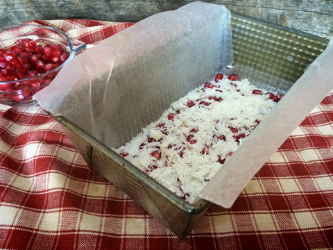
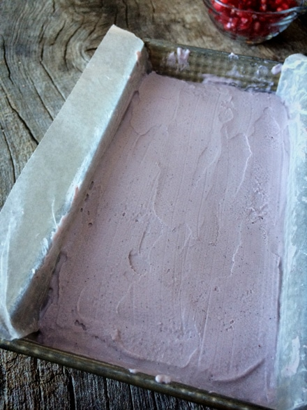
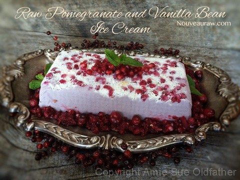

Pomegranate and Vanilla Bean Ice Cream

~ raw, vegan, gluten-free ~
This ice cream turned out so elegant looking. I am still boycotting the ice cream scoop. Not that there is anything wrong with the poor kitchen gadget, but I am always looking to give a breath of fresh air to the typical traditions in the kitchen.
Besides… when serving ice cream for a large gathering, it can become quite a challenge. I have seen many ice cream balls fling from the scoop and roll under the table. Not that I have ever done such a thing. ;)
Since I don’t bake bread, I repurposed my bread pan into an ice cream pan. It works out beautifully. After the ice cream is frozen, turn it upside down onto a serving dish and cut it into single-serving slices. Cover it back up and slide it into the freezer until the festivities begin.
Keep in mind; you can do this a week in advance and check that off your list as one last thing to worry about. Once ready to serve, remove from the freezer and dress it up with a little Raw Cranberry and Pomegranate Relish and be prepared to wow your guests.
Click here if you need help on how to remove the seeds from the pomegranates. There are oodles, and I mean oodles of YouTube videos that will teach you many different techniques. The one I use is quick and easy. The same goes for juicing the pomegranate seeds. I used my Omega juicer, and it produced a beautiful and sweet juice. Some techniques can cause it to be more on the bitter side. I was pleasantly surprised as to how smooth tasting it was. So many times, pomegranate juice can make your teeth feel furry. Or did I just forget to brush my teeth? Haha, I hope you enjoy this recipe. Blessings!
Ingredients:
Yields 6 cups batter
- 2 cups raw cashews, soaked 2+ hours
- 3/4 cup full fat coconut milk or raw thick cream
- 2 cups fresh pressed pomegranate juice
- 1 cup raw agave nectar or maple syrup
- 1/4 cup raw coconut butter
- 1 vanilla bean, seeds only
- 1/2 tsp Himalayan pink salt
Preparation:
- Place the cashews in a glass bowl, along with 4 cups of water.
- Soak for at least 2 hours.
- The soaking process will help reduce phytic acid, which will aid in digestion.
- The soaking also softens the cashews, so they blend nice and creamy.
- After the cashews are through soaking, drain, and rinse.
- In a high-speed blender combine the cashews, coconut cream, pomegranate juice, agave, coconut butter, vanilla bean seeds, and salt. Blend until completely smooth.
- Due to the volume and the creamy texture that we are going after, it is important to use a high-powered blender. It could be too taxing on a lower-end model.
- Blend until the filling is creamy smooth. You shouldn’t detect any grit. If you do, keep blending.
- This process can take 2-4 minutes, depending on the strength of the blender. Keep your hand cupped around the base of the blender carafe to feel for warmth. If the batter is getting too warm. Stop the machine and let it cool. Then proceed once cooled.
- Put the lid on your blender container and place it in the fridge or freezer for 1 hour so it can chill.
- Pour the mixture into your ice cream machine and process according to the manufacturer’s instructions. This step takes about 25 minutes.
- Transfer the ice cream to a freezer-proof container that is airtight or eat as soft-serve ice cream.
Freezing Suggestions for Ice Cream:
-
Use an ice cream machine. Follow the manufactures directions.
-
Freeze in popsicle molds or 3 oz Dixie cups with a popsicle stick inserted.
-
-
Store the ice cream in the very back of the freezer, as far away from the door as possible. Every time you open your freezer door you let in warm air. Keeping ice cream way in the back and storing it beneath other frozen-sold items will help protect it from those steamy incursions.
-
Ice cream is full of fat, and even when frozen, fat has a way of soaking up flavors from the air around it—including those in your freezer. To keep your ice cream from taking on the odors, use a container with a tight-fitting lid. For extra security, place a layer of plastic wrap between your ice cream and the lid.
-
To soften in the refrigerator, transfer ice cream from the freezer to the refrigerator 20-30 minutes before using. Or let it stand at room temperature for 10-15 minutes.
-
Wish to make your own raw ice cream, wonder what machine I might recommend, and more? Click (
here) to check out the Reference Library!

Line the pan with wax paper. Sprinkle shredded coconut and pomegranate
seeds on the bottom. Then pour the ice cream into the pan and smooth it out.
Cover and place in the freezer to harden.

When you are ready to slice the ice cream into single servings… turn the bread
pan over onto a serving plate. Give it a few minutes to rest and the remove the
pan. Peel the wax paper off, and there you have it! Gorgeousnessessssss.

If you want to garnish the ice cream, place a dollop of Cranberry sauce on top, along
with a sprig of fresh mint.
© AmieSue.com